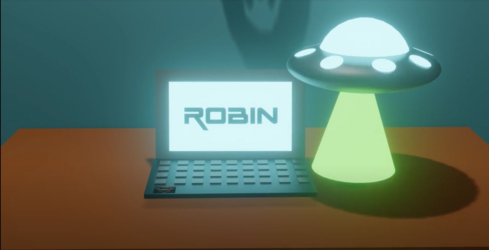
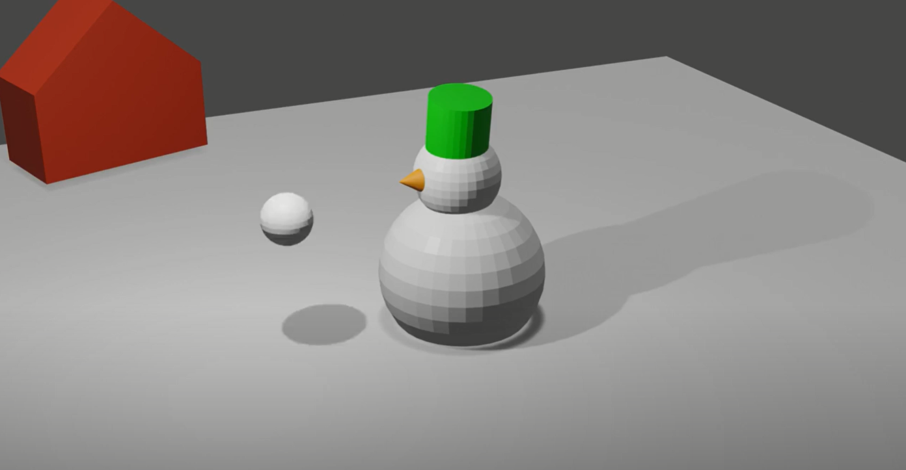

Ik heb de module Blender-0 in klas 1 afgerond. Ik vond het een heel leuke eerste introductie naar Blender, en heb daarom ook Blender-1 als keuze module gedaan. Ik heb voor deze module 5 3D-modellen en 2 animaties gemaakt die je allemaal kan vinden in mijn google drive folder.
De plaatjes rechts zijn screenshots uit de 2 animaties die ik voor deze module heb gemaakt.
 